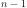
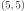

Types et variables du langage python#
Variables#
Il est impossible d’écrire un programme sans utiliser de variable. Ce terme désigne le fait d’attribuer un nom ou identificateur à des informations : en les nommant, on peut manipuler ces informations beaucoup plus facilement. L’autre avantage est de pouvoir écrire des programmes valables pour des valeurs qui varient : on peut changer la valeur des variables, le programme s’exécutera toujours de la même manière et fera les mêmes types de calculs quelles que soient les valeurs manipulées. Les variables jouent un rôle semblable aux inconnues dans une équation mathématique.
L’ordinateur ne sait pas faire l’addition de plus de deux nombres mais cela
suffit à calculer la somme de  premiers nombres entiers.
Pour cela, il est nécessaire de créer une variable intermédiaire qu’on appellera
par exemple
premiers nombres entiers.
Pour cela, il est nécessaire de créer une variable intermédiaire qu’on appellera
par exemple somme de manière à conserver le résultat des sommes intermédiaires.
<<<
n = 11
somme = 0 # initialisation : la somme est nulle
for i in range(1, n): # pour tous les indices de 1 à n exclu
somme = somme + i # on ajoute le i ème élément à somme
print(somme)
>>>
55
Définition D1 : variable
Une variable est caractérisée par :
un identificateur : il peut contenir des lettres, des chiffres, des blancs soulignés mais il ne peut commencer par un chiffre. Minuscules et majuscules sont différenciées. Il est aussi unique.
un type : c’est une information sur le contenu de la variable qui indique à l’interpréteur python, la manière de manipuler cette information.
Comme le typage est dynamique en python, le type n’est pas précisé explicitement,
il est implicitement liée à l’information manipulée. Par exemple, en écrivant,
x=3.4, on ne précise pas le type de la variable x
mais il est implicite car  reçoit une valeur réelle :
reçoit une valeur réelle :
x est de type réel ou float en python. Pour leur première initialisation,
une variable reçoit dans la plupart des cas une constante :
Définition D2 : constante
Les constantes sont le contraire des variables, ce sont toutes les valeurs numériques, chaînes de caractères, …, tout ce qui n’est pas désigné par un nom. Les constantes possèdent un type mais pas d’identificateur.
Le langage python possède un certain nombre de types de variables déjà définis ou types fondamentaux à partir desquels il sera possible de définir ses propres types (voir chapitre Classes). Au contraire de langages tels que le C, il n’est pas besoin de déclarer une variable pour signifier qu’elle existe, il suffit de lui affecter une valeur. Le type de la variable sera défini par le type de la constante qui lui est affectée. Le type d’une variable peut changer, il correspond toujours au type de la dernière affectation.
x = 3.5 # création d'une variable nombre réel appelée x initialisée à 3.5
# 3.5 est un réel, la variable est de type "float"
sc = "chaîne" # création d'une variable chaîne de caractères appelée str
# initialisée à "chaîne", sc est de type "str"
Pour tous les exemples qui suivront, le symbole # apparaîtra à maintes reprises.
Il marque le début d’un commentaire que la fin de la ligne termine.
Autrement dit, un commentaire est une information aidant à la compréhension
du programme mais n’en faisant pas partie comme dans l’exemple qui suit.
x = 3 # affectation de la valeur entière 3 à la variable x
y = 3.0 # affectation de la valeur réelle 3.0 à la variable y
Le python privilégie une instruction par ligne mais il n’est pas possible d’utiliser
plusieurs lorsqu’il n’y a aucune ambiguïté.
Dans le cas contraire, le symbole \ permet d’indiquer que la ligne n’est pas finie.
L’exemple suivant est impossible.
x =
5.5
Il devrait être rédigé comme suit :
x = \
5.5
Mais les parenthèses sont à privilégier :
x = (
5.5)
Avec ce symbole, les longues instructions peuvent être écrites sur plusieurs lignes de manière plus lisibles, de sorte qu’elles apparaissent en entier à l’écran. Si le dernier caractère est une virgule, il est implicite.
Les paragraphes suivant énumèrent les types incontournables en python. Ils sont classés le plus souvent en deux catégories : types immuables ou modifiables. Tous les types du langage python sont également des objets, c’est pourquoi on retrouve dans ce chapitre certaines formes d’écriture similaires à celles présentées plus tard dans le chapitre concernant les classes (Classes).
Types immuables (ou immutable)#
Définition D3 : type immuable (ou immutable)
Une variable de type immuable ne peut être modifiée. Une opération sur une variable de ce type entraîne nécessairement la création d’une autre variable du même type, même si cette dernière est temporaire.
Autrement dit, la simple instruction x+=3 qui consiste à ajouter à la
variable x la valeur 3 crée une seconde variable dont la valeur
est celle de x augmentée de 3 puis à en recopier le contenu dans celui
de la variable x. Les nombres sont des types immuables tout comme les
chaînes de caractères et les tuple qui sont des tableaux d’objets.
Il n’est pas possible de modifier une variable de ce type, il faut en
recréer une autre du même type qui intègrera la modification.
Type « rien » ou None#
python propose un type None pour signifier qu’une variable ne contient rien.
La variable est de type None et est égale à None.
<<<
s = None
print(s) # affiche None
>>>
None
Certaines fonctions utilisent cette convention lorsqu’il leur est impossible
de retourner un résultat. Ce n’est pas la seule option pour gérer cette
impossibilité : il est possible de générer une exception,
de retourner une valeur par défaut ou encore de retourner None.
Il n’y a pas de choix meilleur, il suffit juste de préciser la convention choisie.
Les fonctions sont définies au paragraphe Fonctions, plus simplement, ce sont des mini-programmes : elles permettent de découper un programme long en tâches plus petites. On les distingue des variables car leur nom est suivi d’une liste de constantes ou variables comprises entre parenthèses et séparées par une virgule.
Nombres réels et entiers#
Documentation : Numeric Types — int, float, complex.
Il existe deux types de nombres en python, les nombres réels
float et les nombres entiers int. L’instruction x=3 crée une variable
de type int initialisée à 3 tandis que y=3.0 crée une variable de type
float initialisée à 3.0. Le programme suivant permet de vérifier cela en
affichant pour les variables x et y, leurs valeurs et leurs
types respectifs grâce à la fonction type.
<<<
x = 3
y = 3.0
print("x =", x, type(x))
print("y =", y, type(y))
>>>
x = 3 <class 'int'>
y = 3.0 <class 'float'>
La liste des opérateurs qui s’appliquent aux nombres réels et
entiers suit. Les trois premiers résultats s’expliquent
en utilisant la représentation en base deux. 8 << 1 s’écrit en base deux
100 << 1 = 1000, ce qui vaut 16 en base décimale :
les bits sont décalés vers la droite ce qui équivaut à multiplier
par deux. De même, 7 & 2 s’écrit 1011 & 10 = 10, qui vaut 2 en base décimale.
Les opérateurs <<, >>, |, & sont des opérateurs bit à bit,
ils se comprennent à partir de la représentation binaire des nombres entiers.
opérateur |
signification |
exemple |
|---|---|---|
|
décalage à gauche, à droite |
|
|
opérateur logique |
|
|
opérateur logique |
|
|
addition, soustraction |
|
|
addition ou soustraction puis affectation |
|
|
multiplication, division |
|
|
division entière, le résultat est de type réel si l’un des nombres est réel |
|
|
reste d’une division entière (modulo) |
|
|
multiplication ou division puis affectation |
|
|
puissance (entière ou non, racine carrée = ** 0.5) |
|
Les fonctions int et float permettent de convertir un nombre quelconque
ou une chaîne de caractères respectivement en un entier (arrondi) et en un nombre réel.
<<<
x = int(3.5)
y = float(3)
z = int("3")
print("x:", type(x), " y:", type(y), " z:", type(z))
>>>
x: <class 'int'> y: <class 'float'> z: <class 'int'>
Il peut arriver que la conversion en un nombre entier ne soit pas directe. Dans l’exemple qui suit, on cherche à convertir une chaîne de caractères (voir Chaîne de caractères) en entier mais cette chaîne représente un réel. Il faut d’abord la convertir en réel puis en entier, c’est à ce moment que l’arrondi sera effectué.
i = int ("3.5") # provoque une erreur
i = int (float ("3.5")) # fonctionne
Les opérateurs listés par le tableau ci-dessus ont des priorités
différentes, triés par ordre croissant.
Toutefois, il est conseillé d’avoir recours aux parenthèses pour
enlever les doutes : 3 * 2 ** 4 = 3 * (2 ** 4).
La page Opertor Precedence
est plus complète à ce sujet.
python propose l’opérateur // pour les divisions entières
et c’est une rare exception parmi les languages
qui ne possèdent qu’un seul opérateur / qui retourne
un entier pour une division entière excepté en python :
<<<
x = 11
y = 2
z = x // y # le résultat est 5 et non 5.5 car la division est entière
zz = x / y # le résultat est 5.5
print(z, zz)
>>>
5 5.5
Pour éviter d’écrire le type float, on peut également écrire 11.0
de façon à spécifier explicitement que la valeur 11.0 est réelle et non entière.
L’opérateur // permet d’effectuer une division entière lorsque
les deux nombres à diviser sont réels, le résultat est un entier mais la
variable est de type réel si l’un des nombres est de type réel.
Booléen#
Les booléens sont le résultat d’opérations logiques et ont deux
valeurs possibles : True ou False.
Voici la liste des opérateurs
qui s’appliquent aux booléens.
opérateur |
signification |
exemple |
|---|---|---|
|
et, ou logique |
|
|
négation logique |
|
<<<
x = 4 < 5
print(x) # affiche True
print(not x) # affiche False
>>>
True
False
Voici la liste des opérateurs de comparaisons qui retournent des booléens. Ceux-ci s’applique à tout type, aux entiers, réels, chaînes de caractères, tuples… Une comparaison entre un entier et une chaîne de caractères est syntaxiquement correcte même si le résultat a peu d’intérêt.
opérateur |
signification |
exemple |
|---|---|---|
|
inférieur, supérieur |
|
|
inférieur ou égal, supérieur ou égal |
|
|
égal, différent |
|
A l’instar des nombres réels, il est préférable d’utiliser les
parenthèses pour éviter les problèmes de priorités d’opérateurs
dans des expressions comme : 3 < x and x < 7.
Toutefois, pour cet exemple, python accepte l’écriture résumée
qui enchaîne des comparaisons : 3 < x and x < 7 est
équivalent à 3 < x < 7. Il existe deux autres mots-clés
qui retournent un résultat de type booléen :
opérateur |
signification |
exemple |
|---|---|---|
|
test d’identification |
|
|
test d’appartenance |
|
Ces deux opérateurs seront utilisés ultérieurement,
in avec les listes, les dictionnaires, les boucles
(paragraphe Boucle for), is lors de l’étude des listes
(paragraphe Copie et des classes).
Bien souvent, les booléens sont utilisés de manière implicite lors
de tests (paragraphe test) ce qui n’empêche pas de les
déclarer explicitement.
x = True
y = False
Chaîne de caractères#
Création d’une chaîne de caractères - str#
Définition D4 : chaîne de caractères
Le terme « chaîne de caractères » ou string en anglais signifie une suite finie de caractères, autrement dit, du texte.
Ce texte est compris entre deux guillemets ou deux apostrophes,
ces deux symboles sont interchangeables.
Le type python est str. L’exemple suivant montre comment
créer une chaîne de caractères. Il ne faut pas confondre la partie entre
guillemets ou apostrophes, qui est une constante, de la variable qui la contient.
<<<
t = "string = texte"
print(type(t), t)
t = "string = texte, initialisation avec apostrophes"
print(type(t), t)
t = (
"morceau 1" "morceau 2"
) # second morceau ajouté au premier par l'ajout du symbole \,
# il ne doit rien y avoir après le symbole \,
# pas d'espace ni de commentaire
print(t)
t = """première ligne
seconde ligne""" # chaîne de caractères qui s'étend sur deux lignes
print(t)
>>>
<class 'str'> string = texte
<class 'str'> string = texte, initialisation avec apostrophes
morceau 1morceau 2
première ligne
seconde ligne
La troisième chaîne de caractères créée lors de ce programme s’étend sur deux lignes.
Il est parfois plus commode d’écrire du texte sur deux lignes plutôt
que de le laisser caché par les limites de fenêtres d’affichage.
python offre la possibilité de couper le texte en deux chaînes de
caractères recollées à l’aide du symbole \ à condition que
ce symbole soit le dernier de la ligne sur laquelle il apparaît. De même,
lorsque le texte contient plusieurs lignes, il suffit de les encadrer entre deux
symboles """ ou ''' pour que l’interpréteur python considère l’ensemble
comme une chaîne de caractères et non comme une série d’instructions.
Par défaut, le python ne permet pas l’insertion de caractères tels que
les accents dans les chaînes de caractères, le paragraphe
Accents explique comment résoudre ce problème.
De même, pour insérer un guillemet dans une chaîne de caractères
encadrée elle-même par des guillemets, il faut le faire précéder
du symbole \. La séquence \ est appelée un extra-caractère
(voir table suivante) ou un caractère d’échappement.
|
guillemet |
|---|---|
|
apostrophe |
|
passage à la ligne |
|
insertion du symbole |
|
pourcentage, ce symbole est aussi un caractère spécial |
|
tabulation |
|
retour à la ligne, peu usité, il a surtout son importance lorsqu’on passe d’un système Windows à Linux car Windows l’ajoute automatiquement à tous ses fichiers textes |
… |
Liste des extra-caractères les plus couramment utilisés à l’intérieur d’une chaîne de caractères (voir page Lexical analysis).
Il peut être fastidieux d’avoir à doubler tous les symboles \ d’un nom de fichier.
Il est plus simple dans ce cas de préfixer la chaîne de caractères par r
de façon à éviter que l’utilisation du symbole \ ne désigne un caractère
spécial. Les deux lignes suivantes sont équivalentes :
s = "C:\\Users\\Dupre\\exemple.txt"
s = r"C:\Users\Dupre\exemple.txt"
Sans la lettre "r", tous les \ doivent être doublés, dans le cas
contraire, python peut avoir des effets indésirables selon le
caractère qui suit ce symbole.
Manipulation d’une chaîne de caractères#
Une chaîne de caractères est semblable à un tableau et certains
opérateurs qui s’appliquent aux tableaux s’appliquent également aux
chaînes de caractères. Ceux-ci sont regroupés dans la table
Manipulation d’une chaîne de caractères. La fonction str permet de convertir un nombre,
un tableau, un objet (voir chapitre Classes) en chaîne de caractères
afin de pouvoir l’afficher. La fonction len retourne la longueur
de la chaîne de caractères.
<<<
x = 5.567
s = str(x)
print(type(s), s) # <type 'str'> 5.567
print(len(s)) # affiche 5
>>>
<class 'str'> 5.567
5
opérateur |
signification |
exemple |
|---|---|---|
|
concaténation de chaînes de caractères |
|
|
concaténation puis affectation |
|
|
une chaîne en contient-elle une autre ? |
|
|
répétition d’une chaîne de caractères |
|
|
obtention du enième caractère, le premier caractère a pour indice 0 |
|
|
obtention des caractères compris entre les indices |
|
Il existe d’autres fonctions qui permettent de manipuler les chaînes de caractères.
res = s.fonction (...)
Où s est une chaîne de caractères, fonction
est le nom de l’opération que l’on veut appliquer à s, res
est le résultat de cette manipulation.
La table suivante présente une liste non exhaustive
des fonctions disponibles dont un exemple d’utilisation suit.
Cette syntaxe variable.fonction(arguments) est celle des classes.
|
Retourne le nombre d’occurences de la chaîne de caractères |
|
Recherche une chaîne de caractères |
|
Retourne |
|
Retourne |
|
Retourne une copie de la chaîne de caractères en remplaçant toutes les
occurrences de la chaîne |
|
Découpe la chaîne de caractères en se servant de la chaîne |
|
Remplace les minuscules par des majuscules. |
|
Remplace les majuscules par des minuscules. |
|
|
|
Teste si la chaîne commence par |
|
Teste si la chaîne se termine par |
… |
Lire String Methods. |
<<<
st = "langage python"
st = st.upper() # mise en lettres majuscules
i = st.find("PYTHON") # on cherche "PYTHON" dans st
print(i) # affiche 8
print(st.count("PYTHON")) # affiche 1
print(st.count("PYTHON", 9)) # affiche 0
>>>
8
1
0
L’exemple suivant permet de retourner une chaîne de caractères contenant
plusieurs éléments séparés par ";". La chaîne "un;deux;trois"
doit devenir "trois;deux;un". On utilise pour cela les fonctionnalités
split et join.
L’exemple utilise également la fonctionnalité reverse des listes qui
seront décrites plus loin dans ce chapitre. Il faut simplement retenir
qu’une liste est un tableau. reverse retourne le tableau.
<<<
s = "un;deux;trois"
mots = s.split(";") # mots est égal à ['un', 'deux', 'trois']
mots.reverse() # retourne la liste, mots devient égal à
# ['trois', 'deux', 'un']
s2 = ";".join(mots) # concaténation des éléments de mots séparés par ";"
print(s2) # affiche trois;deux;un
>>>
trois;deux;un
Formatage d’une chaîne de caractères#
Syntaxe %#
python (printf-style String Formatting)
offre une manière plus concise de former une chaîne
de caractères à l’aide de plusieurs types d’informations en
évitant la conversion explicite de ces informations (type str)
et leur concaténation. Il est particulièrement intéressant pour les
nombres réels qu’il est possible d’écrire en imposant un nombre
de décimales fixe. Le format est le suivant :
".... %c1 .... %c2 " % (v1,v2)
c1 est un code choisi parmi ceux de la table
format print. Il indique le format dans lequel la variable
v1 devra être transcrite. Il en est de même pour le code
c2 associé à la variable v2. Les codes insérés dans la chaîne
de caractères seront remplacés par les variables citées entre
parenthèses après le symbole % suivant la fin de la chaîne de
caractères. Il doit y avoir autant de codes que de variables,
qui peuvent aussi être des constantes.
Voici concrètement l’utilisation de cette syntaxe :
<<<
x = 5.5
d = 7
s = "caractères"
res = (
"un nombre réel %f et un entier %d, une chaîne de %s, \n"
"un réel d'abord converti en chaîne de caractères %s" % (x, d, s, str(x + 4))
)
print(res)
res = (
"un nombre réel "
+ str(x)
+ " et un entier "
+ str(d)
+ ", une chaîne de "
+ s
+ ",\n un réel d'abord converti en chaîne de caractères "
+ str(x + 4)
)
print(res)
>>>
un nombre réel 5.500000 et un entier 7, une chaîne de caractères,
un réel d'abord converti en chaîne de caractères 9.5
un nombre réel 5.5 et un entier 7, une chaîne de caractères,
un réel d'abord converti en chaîne de caractères 9.5
La seconde affectation de la variable res propose une solution équivalente
à la première en utilisant l’opérateur de concaténation +.
Les deux solutions sont équivalentes, tout dépend des préférences de celui qui écrit le programme.
La première option permet néanmoins un formatage plus précis des nombres réels
en imposant par exemple un nombre défini de décimal. Le format est le suivant :
"%n.df" % x
n est le nombre de chiffres total et d est le nombre de décimales,
f désigne un format réel indiqué par la présence du symbole %.
Exemple :
<<<
x = 0.123456789
print(x) # affiche 0.123456789
print("%1.2f" % x) # affiche 0.12
print("%06.2f" % x) # affiche 000.12
>>>
0.123456789
0.12
000.12
Il existe d’autres formats regroupés dans la table suivante. L’aide reste encore le meilleur réflexe car le langage python est susceptible d’évoluer et d’ajouter de nouveaux formats.
|
entier relatif |
|
nombre réel au format exponentiel |
|
nombre réel au format décimal |
|
nombre réel, format décimal ou exponentiel si la puissance est trop grande ou trop petite |
|
chaîne de caractères |
… |
Méthode format#
La méthode format propose plus d’options pour formatter
le texte et son usage est de plus en plus fréquent.
La méthode interprète les accolades {} comme des codes qu’elle remplace
avec les valeurs passée en argument. Le type n’importe plus.
Quelques exemples :
<<<
print("{0}, {1}, {2}".format("a", "b", "c")) # le format le plus simple
print("{}, {}, {}".format("a", "b", "c")) # sans numéro
print("{2}, {1}, {0}".format("a", "b", "c")) # ordre changé
print("{0}{1}{0}".format("abra", "cad")) # répétition
>>>
a, b, c
a, b, c
c, b, a
abracadabra
La méthode accepte aussi les paramètres nommées et des expressions.
<<<
print(
"Coordinates: {latitude}, {longitude}".format(
latitude="37.24N", longitude="-115.81W"
)
)
coord = (3, 5)
print("X: {0[0]}; Y: {0[1]}".format(coord))
>>>
Coordinates: 37.24N, -115.81W
X: 3; Y: 5
L’alignement est plus simple :
<<<
print("A{:<30}B".format("left aligned"))
print("A{:>30}B".format("right aligned"))
print("A{:^30}B".format("centered"))
print("A{:*^30}B".format("centered"))
>>>
Aleft aligned B
A right alignedB
A centered B
A***********centered***********B
Format numérique :
<<<
print("{:.2%}".format(19.0 / 22.0))
print("int: {0:d}; hex: {0:x}; oct: {0:o}; bin: {0:b}".format(42))
print("int: {0:d}; hex: {0:#x}; oct: {0:#o}; bin: {0:#b}".format(42))
print("{:,}".format(1234567890))
>>>
86.36%
int: 42; hex: 2a; oct: 52; bin: 101010
int: 42; hex: 0x2a; oct: 0o52; bin: 0b101010
1,234,567,890
Dates :
<<<
import datetime
d = datetime.datetime.now()
print("{:%Y-%m-%d %H:%M:%S}".format(d))
>>>
2023-08-02 22:59:29
Le site format recense d’autres usages de la méthode format comme l’affichage de chaînes de caractères tronquées.
<<<
print("{:10.5}".format("formatages"))
>>>
forma
La méthode format référence les informations à afficher par
numéro {1}, par ordre avec {} ou par nom {name}.
<<<
print("A {} B {}".format(0, 1))
print("A {1} B {0}".format(0, 1))
print("A {un} B {deux}".format(un=1, deux=2))
>>>
A 0 B 1
A 1 B 0
A 1 B 2
Notation f{}#
Les dernières version de python (voir PEP 498 ont indroduit
une notation plus concise encore avec l’utilisation du préfixe
f"..." ou f'...'. La syntaxe est identique à celle de la méthode
format lorsque les informations sont nommées. Les noms correspondent
alors à des variables.
<<<
print("A {un} B {deux}".format(un=1, deux=2))
un = 1
deux = 2
print(f"A {un} B {deux}")
>>>
A 1 B 2
A 1 B 2
Il faut que les variables à afficher existent et on peut se permettre quelques excentricités.
<<<
print("A {un} B {deux}".format(un=1, deux=2))
un = 1
print(f"A {un} B {un + 1}")
>>>
A 1 B 2
A 1 B 2
Un cas particuler %r ou {!r}#
Avec l’expérience, on s’aperçoit que des messages d’erreur
précis accélère notablement sa résolution. Le message
doit inclure des valeurs, des types
pour donner le plus d’informations possible.
Lorsqu’on construit ce message, il n’est plus possible
de distinguer un entier 1 d’une chaîne de caractères
'1'. Cette distinction est néanmoins très importante
car au premier coup d’oeil, on s’oriente vers une cause
plutôt qu’une autre. C’est pourquoi on utilise beaucoup
dans les exceptions le format %r ou {!r} qui propose
un formattage proche de l’expression de la valeur au format
python.
<<<
print("'True' n'est pas True")
print("{} n'est pas {}".format("True", True))
print("{!r} n'est pas {!r}".format("True", True))
print(f"{'True'} n'est pas {True}")
print(f"'{'True'}' n'est pas {True}")
>>>
'True' n'est pas True
True n'est pas True
'True' n'est pas True
True n'est pas True
'True' n'est pas True
tuple#
Définition D5 : tuple
Les tuple sont un tableau d’objets qui peuvent être de tout type. Ils ne sont pas modifiables (les tuple sont immuables ou immutable).
Un tuple apparaît comme une liste d’objets comprise entre parenthèses et séparés par des virgules. Leur création reprend le même format :
x = (4,5) # création d'un tuple composé de 2 entiers
x = ("un",1,"deux",2) # création d'un tuple composé de 2 chaînes de caractères
# et de 2 entiers, l'ordre d'écriture est important
x = (3,) # création d'un tuple d'un élément, sans la virgule,
# le résultat est un entier
Ces objets sont des vecteurs d’objets. Etant donné que les chaînes de caractères sont également des tableaux, ces opérations reprennent en partie celles des Chaîne de caractères et décrites par le paragraphe Common Sequence Operations.
|
vrai si |
|
réciproque de la ligne précédente |
|
concaténation de |
|
concatène |
|
retourne le ième élément de |
|
retourne un tuple contenant une copie des éléments de |
|
retourne un tuple contenant une copie des éléments de |
|
nombre d’éléments de |
|
plus petit élément de |
|
plus grand élément de |
|
retourne la somme de tous les éléments |
Les tuples ne sont pas modifiables (ou mutable), cela signifie qu’il est impossible de modifier un de leurs éléments. Par conséquent, la ligne d’affectation suivante n’est pas correcte :
<<<
a = (4, 5)
a[0] = 3 # déclenche une erreur d'exécution
>>>
[runpythonerror]
Traceback (most recent call last):
exec(obj, globs, loc)
File "", line 5, in <module>
File "", line 4, in run_python_script_139776071544960
TypeError: 'tuple' object does not support item assignment
Pour changer cet élément, il est possible de s’y prendre de la manière suivante :
a = (4,5)
a = (3,) + a[1:2] # crée un tuple d'un élément concaténé
# avec la partie inchangée de a
Nombres complexes#
Il existe d’autres types comme le type complex permettant de représenter les nombres complexes. Ce type numérique suit les mêmes règles et fonctionne avec les mêmes opérateurs (excepté les opérateurs de comparaisons) que ceux présentés au paragraphe Nombres réels et entiers et décrivant les nombres.
<<<
print(complex(1, 1))
c = complex(1, 1)
print(c * c)
>>>
(1+1j)
2j
Le langage python offre la possibilité de créer ses propres types immuables (voir __slots__) mais ils seront définis à partir des types immuables présentés jusqu’ici.
bytes#
Le type bytes
représente un tableau d’octets. Il fonctionne quasiment pareil que le type
str. Les opérations qu’on peut faire dessus sont quasiment identiques :
|
Retourne le nombre d’occurences de la séquence d’octets |
|
Recherche une séquence d’octets |
|
Retourne une copie de la séquence d’octets en remplaçant toutes les
occurrences de la séquence |
|
Découpe la séquence d’octets en se servant de la séquence |
|
|
|
Teste si la chaîne commence par |
|
Teste si la chaîne se termine par |
… |
Pour déclarer un tableau de bytes, il faut préfixer une chaîne de caractères par b :
<<<
b = b"345"
print(b, type(b))
b = bytes.fromhex("2Ef0 F1f2 ")
print(b, type(b))
>>>
b'345' <class 'bytes'>
b'.\xf0\xf1\xf2' <class 'bytes'>
Le type bytes est très utilisé quand il s’agit de convertit une chaîne de caractères d’un encoding à l’autre.
<<<
b = "abc".encode("utf-8")
s = b.decode("ascii")
print(b, s)
print(type(b), type(s))
>>>
b'abc' abc
<class 'bytes'> <class 'str'>
Les encoding sont utiles dès qu’une chaîne de caractères contient un caractère non anglais (accent, sigle…). Les bytes sont aussi très utilisés pour sérialiser un objet.
Types modifiables ou mutable#
Les types modifiables sont des conteneurs (ou containers en anglais) : ils contiennent d’autres objets, que ce soit des nombres, des chaînes de caractères ou des objets de type modifiable. Plutôt que d’avoir dix variables pour désigner dix objets, on en n’utilise qu’une seule qui désigne ces dix objets.
Définition D6 : type modifiable (ou mutable)
Une variable de type modifiable peut être modifiée, elle conserve le même type et le même identificateur. C’est uniquement son contenu qui évolue.
On pourrait penser que les types modifiables sont plus pratiques à l’usage mais ce qu’on gagne en souplesse, on le perd en taille mémoire.
<<<
import sys
li = [3, 4, 5, 6, 7]
tu = (3, 4, 5, 6, 7)
print(sys.getsizeof(li), sys.getsizeof(tu))
>>>
104 80
bytearray#
Liste#
Définition et méthodes (list)#
Définition D7 : liste
Les listes sont des collections d’objets qui peuvent être de tout type. Elles sont modifiables.
Une liste apparaît comme une succession d’objets compris entre crochets et séparés par des virgules. Leur création reprend le même format :
x = [4,5] # création d'une liste composée de deux entiers
x = ["un",1,"deux",2] # création d'une liste composée de
# deux chaînes de caractères
# et de deux entiers, l'ordre d'écriture est important
x = [3,] # création d'une liste d'un élément, sans la virgule,
# le résultat reste une liste
x = [ ] # crée une liste vide
x = list () # crée une liste vide
y = x [0] # accède au premier élément
y = x [-1] # accède au dernier élément
Ces objets sont des listes chaînées d’autres objets de type quelconque (immuable ou modifiable). Il est possible d’effectuer les opérations qui suivent. Ces opérations reprennent celles des tuple (voir opération tuple) et incluent d’autres fonctionnalités puisque les listes sont modifiables. Il est donc possible d’insérer, de supprimer des éléments, de les trier. La syntaxe des opérations sur les listes est similaire à celle des opérations qui s’appliquent sur les chaînes de caractères, elles sont présentées par la table suivante.
|
vrai si |
|
réciproque de la ligne précédente |
|
concaténation de |
|
concatène |
|
retourne l’élément i$^text{ème}$ élément de |
|
retourne une liste contenant les éléments de |
|
retourne une liste contenant les éléments de |
|
nombre d’éléments de |
|
plus petit élément de |
|
plus grand élément de |
|
retourne la somme de tous les éléments |
|
supprime les éléments d’indices entre |
|
convertit |
|
Retourne le nombre d’occurrences de l’élément |
|
Retourne l’indice de la première occurrence de l’élément |
|
Ajoute l’élément |
|
Ajoute tous les éléments de la liste |
|
Insère l’élément |
|
Supprime la première occurrence de l’élément |
|
Retourne l’élément |
|
Retourne la liste, le premier et dernier élément échange leurs places, le second et l’avant dernier, et ainsi de suite. |
|
Cette fonction trie la liste par ordre croissant. Le paramètre |
Exemples (list)#
L’exemple suivant montre une utilisation de la méthode sort.
<<<
x = [9, 0, 3, 5, 4, 7, 8] # définition d'une liste
print(x) # affiche cette liste
x.sort() # trie la liste par ordre croissant
print(x) # affiche la liste triée
>>>
[9, 0, 3, 5, 4, 7, 8]
[0, 3, 4, 5, 7, 8, 9]
Pour classer les objets contenus par la liste mais selon un ordre
différent, il faut définir une fonction qui détermine un ordre entre
deux éléments de la liste. C’est la fonction compare
de l’exemple suivant.
<<<
def compare_key(x):
return -x
x = [9, 0, 3, 5, 4, 7, 8]
x.sort(key=compare_key) # trie la liste x à l'aide de la fonction compare
# cela revient à la trier par ordre décroissant
print(x)
>>>
[9, 8, 7, 5, 4, 3, 0]
L’exemple suivant illustre un exemple dans lequel on essaye d’accéder à l’indice d’un élément qui n’existe pas dans la liste :
<<<
x = [9, 0, 3, 5, 0]
print(x.index(1)) # cherche la position de l'élément 1
>>>
[runpythonerror]
Traceback (most recent call last):
exec(obj, globs, loc)
File "", line 5, in <module>
File "", line 4, in run_python_script_139776067344192
ValueError: 1 is not in list
Comme cet élément n’existe pas, on déclenche ce qu’on
appelle une exception qui se traduit par l’affichage d’un message
d’erreur. Le message indique le nom de l’exception générée (ValueError)
ainsi qu’un message d’information permettant en règle générale
de connaître l’événement qui en est la cause.
Pour éviter cela, on choisit d’intercepter l’exception (voir paragraphe Exceptions).
<<<
x = [9, 0, 3, 5, 0]
try:
print(x.index(1))
except ValueError:
print("1 n'est pas présent dans la liste x")
else:
print("trouvé")
>>>
1 n'est pas présent dans la liste x
Fonction range#
Les listes sont souvent utilisées dans des boucles ou notamment par l’intermédiaire de la fonction range. Cette fonction retourne un itérateur sur des entiers. Nous verrons les itérateurs plus tard. Disons pour le moment les itérateurs ont l’apparence d’un ensembe mais ce n’en est pas un.
range (debut, fin [,marche])
Retourne une liste incluant tous les entiers compris entre debut et fin
exclu. Si le paramètre facultatif marche est renseigné, la liste
contient tous les entiers n compris debut et fin
exclu et tels que n - debut soit un multiple de marche.
Exemple :
<<<
print(range(0, 10, 2))
print(list(range(0, 10, 2)))
>>>
range(0, 10, 2)
[0, 2, 4, 6, 8]
Cette fonction est souvent utilisée lors de boucles for pour parcourir tous les éléments d’un tuple, d’une liste, d’un dictionnaire… Le programme suivant permet par exemple de calculer la somme de tous les entiers impairs compris entre 1 et 20 exclu.
s = 0
for n in range (1,20,2) : # ce programme est équivalent à
s += n # s = sum (range(1,20,2))
Le programme suivant permet d’afficher tous les éléments d’une liste.
<<<
x = ["un", 1, "deux", 2, "trois", 3]
for n in range(0, len(x)):
print("x[%d] = %s" % (n, x[n]))
>>>
x[0] = un
x[1] = 1
x[2] = deux
x[3] = 2
x[4] = trois
x[5] = 3
Boucles et listes#
Il est possible aussi de ne pas se servir des indices comme intermédiaires
pour accéder aux éléments d’une liste quand il s’agit d’effectuer un
même traitement pour tous les éléments de la liste x.
<<<
x = ["un", 1, "deux", 2]
for el in x:
print("la liste inclut : ", el)
>>>
la liste inclut : un
la liste inclut : 1
la liste inclut : deux
la liste inclut : 2
L’instruction for el in x : se traduit littéralement par :
pour tous les éléments de la liste, faire….
Il existe également des notations abrégées lorsqu’on cherche à construire une liste à partir d’une autre. Le programme suivant construit la liste des entiers de 1 à 5 à partir du résultat retourné par la fonction range.
<<<
y = list()
for i in range(0, 5):
y.append(i + 1)
print(y)
>>>
[1, 2, 3, 4, 5]
Le langage python offre la possibilité de résumer cette écriture en une seule ligne. Cette syntaxe sera reprise au paragraphe Listes, boucle for, liste en extension.
<<<
y = [i + 1 for i in range(0, 5)]
print(y)
>>>
[1, 2, 3, 4, 5]
Cette définition de liste peut également inclure des tests ou des boucles imbriquées.
<<<
y = [i for i in range(0, 5) if i % 2 == 0] # sélection les éléments pairs
print(y) # affiche [0,2,4]
z = [
i + j for i in range(0, 5) for j in range(0, 5)
] # construit tous les nombres i+j possibles
print(z)
>>>
[0, 2, 4]
[0, 1, 2, 3, 4, 1, 2, 3, 4, 5, 2, 3, 4, 5, 6, 3, 4, 5, 6, 7, 4, 5, 6, 7, 8]
Collage de séquences, fonction zip#
On suppose qu’on dispose de n séquences d’éléments (tuple, liste), toutes de longueur l. La fonction zip permet de construire une liste de tuples qui est la juxtaposition de toutes ces séquences. Le ième tuple de la liste résultante contiendra tous les ième éléments des séquences juxtaposées. Si les longueurs des séquences sont différentes, la liste résultante aura même taille que la plus courte des séquences.
<<<
a = (1, 0, 7, 0, 0, 0)
b = [2, 2, 3, 5, 5, 5]
c = ["un", "deux", "trois", "quatre"]
d = zip(a, b, c)
print(d)
>>>
<zip object at 0x7f2026da5440>
Concaténation de chaîne de caractères#
Il arrive fréquemment de constuire une chaîne de caractères petits
bouts par petits bouts comme le montre le premier exemple ci-dessous.
Cette construction peut s’avérer très lente lorsque le résultat est
long. Dans ce cas, il est nettement plus rapide d’ajouter chaque morceau
dans une liste puis de les concaténer en une seule fois grâce à la méthode
str.join().
s = ""
while <condition> : s += ...
s = []
while <condition> : s.append ( ... )
s = "".join (s)
Copie#
A l’inverse des objets de type immuable, une affectation ne signifie
pas une copie. Afin d’éviter certaines opérations superflues et
parfois coûteuses en temps de traitement, on doit distinguer la variable
de son contenu. Une variable désigne une liste avec un mot (ou identificateur),
une affection permet de créer un second mot pour désigner la même liste.
Il est alors équivalent de faire des opérations avec le premier mot
ou le second comme le montre l’exemple suivant avec les listes l et l2.
<<<
l = [4, 5, 6]
l2 = l
print(l) # affiche [4,5,6]
print(l2) # affiche [4,5,6]
l2[1] = "modif"
print(l) # affiche [4, 'modif', 6]
print(l2) # affiche [4, 'modif', 6]
>>>
[4, 5, 6]
[4, 5, 6]
[4, 'modif', 6]
[4, 'modif', 6]
Dans cet exemple, il n’est pas utile de créer une seconde variable, dans le suivant, cela permet quelques raccourcis.
<<<
l = [[0, 1], [2, 3]]
l1 = l[0]
l1[0] = "modif" # ligne équivalente à : l [0][0] = "modif"
print(l, l1)
>>>
[['modif', 1], [2, 3]] ['modif', 1]
Par conséquent, lorsqu’on affecte une liste à une variable, celle-ci
n’est pas recopiée, la liste reçoit seulement un nom de variable.
L’affectation est en fait l’association d’un nom avec un objet
(voir paragraphe Copie d’instances).
Pour copier une liste, il faut utiliser la fonction
copy.copy() du module copy.
<<<
import copy
l = [4, 5, 6]
l2 = copy.copy(l)
print(l) # affiche [4,5,6]
print(l2) # affiche [4,5,6]
l2[1] = "modif"
print(l) # affiche [4,5,6]
print(l2) # affiche [4, 'modif', 6]
>>>
[4, 5, 6]
[4, 5, 6]
[4, 5, 6]
[4, 'modif', 6]
Le module copy
est une extension interne. Cette syntaxe sera vue au chapitre Module ou extension.
Ce point sera rappelé au paragraphe Listes et dictionnaires.
L’opérateur == permet de savoir si deux listes sont égales même si l’une est
une copie de l’autre. Le mot-clé is
permet de vérifier si deux variables font référence à la même liste
ou si l’une est une copie de l’autre comme le montre l’exemple suivant :
<<<
import copy
l = [1, 2, 3]
l2 = copy.copy(l)
l3 = l
print(l == l2) # affiche True
print(l is l2) # affiche False
print(l is l3) # affiche True
>>>
True
False
True
Fonction ``copy`` et ``deepcopy``
Le comportement de la fonction copy.copy()
peut surprendre dans le cas où une liste contient d’autres listes.
Pour être sûr que chaque élément d’une liste a été correctement recopiée,
il faut utiliser la fonction deepcopy.
La fonction est plus longue mais elle recopie toutes les listes que
ce soit une liste incluse dans une liste elle-même incluse
dans une autre liste elle-même incluse…
<<<
import copy
l = [[1, 2, 3], [4, 5, 6]]
l2 = copy.copy(l)
l3 = copy.deepcopy(l)
l[0][0] = 1111
print(l) # affiche [[1111, 2, 3], [4, 5, 6]]
print(l2) # affiche [[1111, 2, 3], [4, 5, 6]]
print(l3) # affiche [[1, 2, 3], [4, 5, 6]]
print(l is l2) # affiche False
print(l[0] is l2[0]) # affiche True
print(l[0] is l3[0]) # affiche False
>>>
[[1111, 2, 3], [4, 5, 6]]
[[1111, 2, 3], [4, 5, 6]]
[[1, 2, 3], [4, 5, 6]]
False
True
False
La fonction deepcopy est plus lente à exécuter car elle prend en compte les références récursives comme celles de l’exemple suivant où deux listes se contiennent l’une l’autre.
<<<
l = [1, "a"]
ll = [l, 3] # ll contient l
l[0] = ll # l contient ll
print(l) # affiche [[[...], 3], 'a']
print(ll) # affiche [[[...], 'a'], 3]
import copy
z = copy.deepcopy(l)
print(z) # affiche [[[...], 3], 'a']
>>>
[[[...], 3], 'a']
[[[...], 'a'], 3]
[[[...], 3], 'a']
Dictionnaire#
Les dictionnaires sont des tableaux plus souples que les listes.
Une liste référence les éléments en leur donnant une position :
la liste associe à chaque élément une position entière comprise entre
0 et  si est la longueur de la liste.
Un dictionnaire permet d’associer à un élément autre chose qu’une
position entière : ce peut être un entier, un réel, une chaîne de
caractères, un tuple contenant des objets immuables. D’une manière générale,
un dictionnaire associe à une valeur ce qu’on appelle une clé de type immuable.
Cette clé permettra de retrouver la valeur associée.
L’avantage principal des dictionnaires est la recherche optimisée des clés. Par exemple, on recense les noms des employés d’une entreprise dans une liste. On souhaite ensuite savoir si une personne ayant un nom précisé à l’avance appartient à cette liste. Il faudra alors parcourir la liste jusqu’à trouver ce nom ou parcourir toute la liste si jamais celui-ci ne s’y trouve pas. Dans le cas d’un dictionnaire, cette recherche du nom sera beaucoup plus rapide à écrire et à exécuter.
Définition et méthodes (dict)#
Définition D8 : dictionnaire
Les dictionnaires sont des listes de couples. Chaque couple contient une clé et une valeur. Chaque valeur est indicée par sa clé. La valeur peut-être de tout type, la clé doit être de type immuable, ce ne peut donc être ni une liste, ni un dictionnaire. Chaque clé comme chaque valeur peut avoir un type différent des autres clés ou valeurs.
Un dictionnaire apparaît comme une succession de couples d’objets
comprise entre accolades et séparés par des virgules. La clé et sa valeur
sont séparées par le symbole :. Leur création reprend le même format :
x = { "cle1":"valeur1", "cle2":"valeur2" }
y = { } # crée un dictionnaire vide
z = dict() # crée aussi un dictionnaire vide
Les indices ne sont plus entiers mais des chaînes de caractères pour cet exemple. Pour associer la valeur à la clé « cle1 », il suffit d’écrire :
<<<
x = {"cle1": "valeur1", "cle2": "valeur2"}
print(x["cle1"])
>>>
valeur1
La plupart des fonctions disponibles pour les listes sont interdites
pour les dictionnaires comme la concaténation ou l’opération de multiplication
(*). Il n’existe plus non plus d’indices entiers pour repérer les éléments,
le seul repère est leur clé. La table suivante dresse la liste des opérations sur les dictionnaires.
|
vrai si |
|
réciproque de la ligne précédente |
|
retourne l’élément associé à la clé |
|
nombre d’éléments de |
|
plus petite clé |
|
plus grande clé |
|
supprime l’élément associé à la clé |
|
retourne une liste contenant toutes les clés du dictionnaire |
|
convertit |
|
Retourne une copie de |
|
Retourne un itérateur sur tous les couples (clé, valeur) inclus dans le dictionnaire. |
|
Retourne un itérateur sur toutes les clés du dictionnaire |
|
Retourne un itérateur sur toutes les
valeurs du dictionnaire |
|
Retourne |
|
Supprime tous les éléments du dictionnaire. |
|
Le dictionnaire |
|
Définit |
|
Retourne un élément et le supprime du dictionnaire. |
Contrairement à une liste, un dictionnaire ne peut être trié car sa
structure interne est optimisée pour effectuer des recherches rapides
parmi les éléments. On peut aussi se demander quel est l’intérêt de la
méthode pop
qui retourne un élément puis le supprime alors qu’il existe le mot-clé del.
Cette méthode est simplement plus rapide car elle choisit à chaque fois l’élément
le moins coûteux à supprimer, surtout lorsque le dictionnaire est volumineux.
Les itérateurs sont des objets qui permettent de parcourir rapidement un dictionnaire, ils seront décrits en détail au chapitre Classes sur les classes. Un exemple de leur utilisation est présenté dans le paragraphe suivant.
Exemples (dict)#
Il n’est pas possible de trier un dictionnaire. L’exemple suivant permet néanmoins d’afficher tous les éléments d’un dictionnaire selon un ordre croissant des clés. Ces exemples font appel aux paragraphes sur les boucles (voir chapitre Syntaxe du langage Python (boucles, tests, fonctions)).
<<<
d = {
"un": 1,
"zéro": 0,
"deux": 2,
"trois": 3,
"quatre": 4,
"cinq": 5,
"six": 6,
"sept": 1,
"huit": 8,
"neuf": 9,
"dix": 10,
}
key = list(d.keys())
key.sort()
for k in key:
print(k, d[k])
>>>
cinq 5
deux 2
dix 10
huit 8
neuf 9
quatre 4
sept 1
six 6
trois 3
un 1
zéro 0
L’exemple suivant montre un exemple d’utilisation des itérateurs. Il s’agit de construire un dictionnaire inversé pour lequel les valeurs seront les clés et réciproquement.
<<<
d = {
"un": 1,
"zero": 0,
"deux": 2,
"trois": 3,
"quatre": 4,
"cinq": 5,
"six": 6,
"sept": 1,
"huit": 8,
"neuf": 9,
"dix": 10,
}
dinv = {} # création d'un dictionnaire vide, on parcout
for key, value in d.items(): # les éléments du dictionnaire comme si
# c'était une liste de 2-uple (clé,valeur)
dinv[value] = key # on retourne le dictionnaire
print(dinv) # affiche {0: 'zero', 1: 'un', 2: 'deux',
# 3: 'trois', 4: 'quatre', 5: 'cinq', 6: 'six',
# 8: 'huit', 9: 'neuf', 10: 'dix'}
>>>
{1: 'sept', 0: 'zero', 2: 'deux', 3: 'trois', 4: 'quatre', 5: 'cinq', 6: 'six', 8: 'huit', 9: 'neuf', 10: 'dix'}
La méthode items retourne un itérateur. Cela permet de parcourir les éléments du dicionnaire
sans créer de liste intermédiaire. Ceci explique ce qu’affiche le programme suivant :
<<<
d = {
"un": 1,
"zero": 0,
"deux": 2,
"trois": 3,
"quatre": 4,
"cinq": 5,
"six": 6,
"sept": 1,
"huit": 8,
"neuf": 9,
"dix": 10,
}
print(d.items())
print(list(d.items()))
>>>
dict_items([('un', 1), ('zero', 0), ('deux', 2), ('trois', 3), ('quatre', 4), ('cinq', 5), ('six', 6), ('sept', 1), ('huit', 8), ('neuf', 9), ('dix', 10)])
[('un', 1), ('zero', 0), ('deux', 2), ('trois', 3), ('quatre', 4), ('cinq', 5), ('six', 6), ('sept', 1), ('huit', 8), ('neuf', 9), ('dix', 10)]
D’une manière générale, il faut éviter d’ajouter ou de supprimer un élément
dans une liste ou un dictionnaire qu’on est en train de parcourir au sein
d’une boucle for ou while. Cela peut marcher mais cela peut aussi
aboutir à des résultats imprévisibles surtout avec l’utilisation
d’itérateurs (fonction items, values, keys).
Il est préférable de terminer le parcours de la liste ou du dictionnaire puis
de faire les modifications désirées une fois la boucle terminée.
Dans le meilleur des cas, l’erreur suivante survient :
File "essai.py", line 6, in <module>
for k in d :
RuntimeError: dictionary changed size during iteration
Copie (dict)#
A l’instar des listes (voir paragraphe Copie), les dictionnaires sont des objets et une affectation n’est pas équivalente à une copie comme le montre le programme suivant.
<<<
d = {4: 4, 5: 5, 6: 6}
d2 = d
print(d) # affiche {4: 4, 5: 5, 6: 6}
print(d2) # affiche {4: 4, 5: 5, 6: 6}
d2[5] = "modif"
print(d) # affiche {4: 4, 5: 'modif', 6: 6}
print(d2) # affiche {4: 4, 5: 'modif', 6: 6}
>>>
{4: 4, 5: 5, 6: 6}
{4: 4, 5: 5, 6: 6}
{4: 4, 5: 'modif', 6: 6}
{4: 4, 5: 'modif', 6: 6}
Lorsqu’on affecte un dictionnaire à une variable, celui-ci n’est pas recopié,
le dictionnaire reçoit seulement un nom de variable. L’affectation est en fait
l’association d’un nom avec un objet (voir paragraphe Copie d’instances).
Pour copier un dictionnaire, on peut utiliser la méthode
dict.copy().
<<<
d = {4: 4, 5: 5, 6: 6}
d2 = d.copy()
print(d) # affiche {4: 4, 5: 5, 6: 6}
print(d2) # affiche {4: 4, 5: 5, 6: 6}
d2[5] = "modif"
print(d) # affiche {4: 4, 5: 5, 6: 6}
print(d2) # affiche {4: 4, 5: 'modif', 6: 6}
>>>
{4: 4, 5: 5, 6: 6}
{4: 4, 5: 5, 6: 6}
{4: 4, 5: 5, 6: 6}
{4: 4, 5: 'modif', 6: 6}
Le mot-clé is a la même signification pour les dictionnaires que
pour les listes, l’exemple du paragraphe Copie
est aussi valable pour les dictionnaires. Il en est de même
pour la remarque concernant la fonction
deepcopy.
Cette fonction recopie les listes et les dictionnaires.
Clés de type modifiable#
Ce paragraphe concerne davantage des utilisateurs avertis qui souhaitent
malgré tout utiliser des clés de type modifiable. Dans l’exemple qui suit,
la clé d’un dictionnaire est également un dictionnaire et cela
provoque une erreur. Il en serait de même si la variable k
utilisée comme clé était une liste.
k = { 1:1}
d = { }
d [k] = 0
La sortie :
Traceback (most recent call last):
File "cledict.py", line 3, in <module>
d [k] = 0
TypeError: dict objects are unhashable
Cela ne veut pas dire qu’il faille renoncer à utiliser un dictionnaire ou une liste comme clé. La fonction id permet d’obtenir un entier qui identifie de manière unique tout objet. Le code suivant est parfaitement correct.
k = { 1:1}
d = { }
d [id (k)] = 0
Toutefois, ce n’est pas parce que deux dictionnaires auront des contenus identiques
que leurs identifiants retournés par la fonction id seront égaux.
C’est ce qui explique l’erreur que provoque la dernière ligne du programme suivant.
k = {1:1}
d = { }
d [id (k)] = 0
b = k
print(d[id(b)]) # affiche bien zéro
c = {1:1}
print(d[id(c)]) # provoque une erreur car même si k et c ont des contenus égaux,
# ils sont distincts, la clé id(c) n'existe pas dans d
Il existe un cas où on peut se passer de la fonction id
mais il inclut la notion de classe définie au chapitre Classes.
L’exemple suivant utilise directement l’instance k comme clé.
En affichant le dictionnaire d, on vérifie que la clé est liée au résultat
de l’instruction id(k) même si ce n’est pas la clé.
class A : pass
k = A ()
d = { }
d [k] = 0
print(d) # affiche {<__main__.A object at 0x0120DB90>: 0}
print(id(k), hex(id(k))) # affiche 18930576, 0x120db90
print(d[id(k)]) # provoque une erreur
La fonction hex
convertit un entier en notation hexadécimale. Les nombres affichés changent
à chaque exécution. Pour conclure, ce dernier exemple montre comment se passer
de la fonction id dans le cas d’une clé de type dictionnaire.
<<<
class A(dict):
def __hash__(self):
return id(self)
k = A()
k["t"] = 4
d = {}
d[k] = 0
print(d) # affiche {{'t': 4}: 0}
>>>
{{'t': 4}: 0}
Ensemble ou set#
Le langage python définit également ce qu’on appelle un ensemble. Il est défini par les classes set de type modifiable et la classe frozenset de type immuable. Ils n’acceptent que des types identiques et offrent la plupart des opérations liées aux ensembles comme l’intersection, l’union.
<<<
print(set((1, 2, 3)) & set((2, 3, 5)))
# construit l'intersection qui est set([2, 3])
>>>
{2, 3}
Définition D9 : set
Un set est un ensemble de valeurs uniques. Ajouter une valeur déjà dans la liste n’a donc aucun impact. On s’en sert beaucoup pour récupérer une liste d’éléments uniques. Ce type est dit mutable car il est possible d’ajouter des valeurs. Comme pour les dictionnaires, les valeurs stockées dans un ensemble doivent être immutables. Sans cela, le langage ne pourrait garantir l’unicité.
Définition D10 : frozenset
Un set est un ensemble de valeurs uniques. Ajouter une valeur déjà dans la liste n’a donc aucun impact. On s’en sert beaucoup pour récupérer une liste d’éléments uniques. Ce type est dit immutable car il est impossible d’ajouter des valeurs. En contrepartie, on peut s’en servir comme clé dans un dictionnaire ou comme valeur dans un set ou frozenset.
Matrices et DataFrames#
Bien que ces objects soient maintenant incontournables et font une des force du langage python, ils ne font pas partie du langage mais sont implémentés dans les librairies numpy et pandas. Ces deux objets nécessitent un chapitre à part : Matrices et DataFrames.
Extensions#
Fonction print, repr et conversion en chaîne de caractères#
La fonction print est déjà apparue dans les exemples présentés ci-dessus,
elle permet d’afficher une ou plusieurs variables préalablement définies,
séparées par des virgules. Les paragraphes qui suivent donnent quelques
exemples d’utilisation. La fonction print
permet d’afficher n’importe quelle variable ou objet à l’écran, cet affichage
suppose la conversion de cette variable ou objet en une chaîne de caractères.
Deux fonctions permettent d’effectuer cette étape sans
toutefois afficher le résultat à l’écran.
Point à retenir : la fonction print ne change pas le programme, elle affiche à l’écran
le résultat d’une variable sans la modifier. Cela revient à écouter un programme avec un stéthoscope
pour comprendre comment il fonctionne sans altérer son fonctionnement.
La fonction str
(voir paragraphe Manipulation d’une chaîne de caractères permet de convertir toute variable en
chaîne de caractères. Il existe cependant une autre fonction
repr
qui effectue cette conversion. Dans ce cas, le résultat peut être
interprété par la fonction eval
qui se charge de la conversion inverse.
Pour les types simples comme ceux présentés dans ce chapitre,
ces deux fonctions retournent des résultats identiques.
Pour l’exemple, x désigne n’importe quelle variable.
x == eval (repr(x)) # est toujours vrai (True)
x == eval (str (x)) # n'est pas toujours vrai
Fonction eval#
Comme le suggère le paragraphe précédent, la fonction eval permet d’évaluer une chaîne de caractères ou plutôt de l’interpréter comme si c’était une instruction en python. Le petit exemple suivant permet de tester toutes les opérations de calcul possibles entre deux entiers.
<<<
x = 32
y = 9
op = "+ - * / % // & | and or << >>".split()
for o in op:
s = str(x) + " " + o + " " + str(y)
print(s, " = ", eval(s))
>>>
32 + 9 = 41
32 - 9 = 23
32 * 9 = 288
32 / 9 = 3.5555555555555554
32 % 9 = 5
32 // 9 = 3
32 & 9 = 0
32 | 9 = 41
32 and 9 = 9
32 or 9 = 32
32 << 9 = 16384
32 >> 9 = 0
Le programme va créer une chaîne de caractères pour chacune des opérations et celle-ci sera évaluée grâce à la fonction eval comme si c’était une expression numérique. Il faut bien sûr que les variables que l’expression mentionne existent durant son évaluation.
Informations fournies par python#
Bien que les fonctions ne soient définies que plus tard (paragraphe Fonctions, il peut être intéressant de mentionner la fonction dir qui retourne la liste de toutes les variables créées et accessibles à cet instant du programme. L’exemple suivant :
<<<
x = 3
print(dir())
>>>
['__WD__', 'x']
Certaines variables - des chaînes des caractères - existent déjà avant même la première instruction. Elles contiennent différentes informations concernant l’environnement dans lequel est exécuté le programme python :
|
Ce module contient tous les éléments présents dès le début d’un programme python, il contient entre autres les types présentés dans ce chapitre et des fonctions simples comme range. |
|
C’est une chaîne commentant le fichier, c’est une chaîne de caractères
insérée aux premières lignes
du fichiers et souvent entourée des symboles |
|
Contient le nom du fichier où est écrit ce programme. |
|
Contient le nom du module. |
La fonction dir
est également pratique pour afficher toutes les fonctions d’un module.
L’instruction dir(sys) affiche la liste des fonctions du module
sys
(voir chapitre Module ou extension).
La fonction dir() appelée sans argument donne la liste des fonctions
et variables définies à cet endroit du programme. Ce résultat peut varier
selon qu’on se trouver dans une fonction, une méthode de classe ou à
l’extérieur du programme. L’instruction dir([]) donne la liste
des méthodes qui s’appliquent à une liste.
De la même manière, la fonction type retourne une information concernant le type d’une variable.
<<<
x = 3
print(x, type(x)) # affiche 3 <type 'int'>
x = 3.5
print(x, type(x)) # affiche 3.5 <type 'float'>
>>>
3 <class 'int'>
3.5 <class 'float'>
Affectations multiples#
Il est possible d’effectuer en python plusieurs affectations simultanément.
x = 5 # affecte 5 à x
y = 6 # affecte 6 à y
x,y = 5,6 # affecte en une seule instruction 5 à x et 6 à y
Cette particularité reviendra lorsque les fonctions seront décrites puisqu’il est possible qu’une fonction retourne plusieurs résultats comme la fonction divmod illustrée par le programme suivant.
<<<
x, y = divmod(17, 5)
print(x, y) # affiche 3 2
print("17 / 5 = 5 * ", x, " + ", y) # affiche 17 / 5 = 5 * 3 + 2
>>>
3 2
17 / 5 = 5 * 3 + 2
Le langage python offre la possibilité d’effectuer plusieurs
affectations sur la même ligne. Dans l’exemple qui suit,
le couple  est affecté à la variable point,
puis le couple x, y reçoit les deux valeurs du tuple point.
x,y = point = 5,5
Hiérarchie des objets#
La page modèle de données décrit les différentes catégories d’objets du langage. Des objets de la même classe propose des fonctionnalités similaires.
Objets internes#
Les objets objet internes sont à peu près tout ce qui n’existe pas dans un langage compilé. Elles sont propres au langage et laisse transparaître des informations dont l’interpréteur a besoin pour comprendre le programme. Il est déconseillé de s’en servir si jamais on souhaite un jour traduire le même code dans un autre langage.
Commentaires accentués#
Les commentaires commencent par le symbole # et se terminent par la fin de la ligne ;
ils ne sont pas interprétés, ils n’ont aucune influence sur l’exécution du programme.
Lorsque les commentaires incluent des symboles exclusivement français tels que
les accents, le compilateur génère l’erreur suivante :
SyntaxError: Non-UTF-8 code starting with '\xe9' in file f.py on line 1,
but no encoding declared; see http://python.org/dev/peps/pep-0263/
for details
Il est néanmoins possible d’utiliser des accents dans les commentaires à condition d’insérer le commentaire suivant à la première ligne du programme. Il n’est pas nécessaire de retenir cette commande si le programme est écrit dans l’éditeur de texte fourni avec python car ce dernier propose automatiquement d’insérer cette ligne. Ce point est abordé au paragraphe Accents. Il faut inclure la placer le texte suivant en première ligne :
# -*- coding: utf-8 -*-
Ou :
# coding: cp1252
Ou encore :
# coding: latin-1
Le premier encoding utf-8 est le plus communément utilisé dans le monde internet.
Le second est utilisé par Windows.